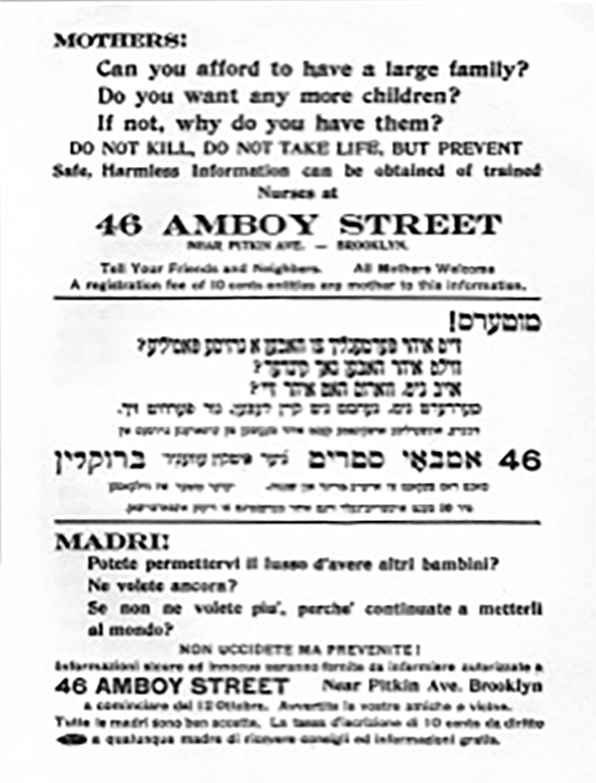

METROPOLIS OF SCIENCE
BIRTH OF PLANNED PARENTHOOD

Advertising for Sanger's first clinic.
17 West 16th Street was the location of one of Margaret Sanger’s first clinics
By Sara Reistad-Long
West 16th Street is cozy, peppered with trees and lined with townhouses. It’s in one of these buildings, pretty and unassuming number 17, that nurse and activist Margaret Sanger (1879—1966) operated her contraceptive clinic from 1930 to 1973. In 1993, the building (now privately owned) was declared a National Historic Landmark.
Site of one of Margaret Sanger's clinics between 1930 and 1973. (Photo by Sara Reistad-Long)
In the early 1900s, child and infant mortality was 40 percent. Maternal mortality was 99 percent higher than it is today, and 40 percent of those deaths were caused by infections, many the result of illegal or self-induced abortion. Sanger’s own mother had undergone 11 births and seven miscarriages before she died at 50, an event Sanger blamed on the physical strain of those 18 years of pregnancy.
Sanger herself had access to birth control and limited her family to three children. Wanting to give more women access to that same option, she began writing a sex education column called “What Every Girl Should Know” for a socialist paper known as The Call. Under the Comstock Act, a ruling making the circulation of “obscenity” illegal through the mail, the U.S. Post Office refused to send the papers.

Margaret Sanger. (Underwood & Underwood; Wikimedia Commons)
The Call responded by running an empty box in place of the column that read “What Every Girl Should Know—nothing by order of the United States Post Office,” and Sanger herself fought back by publishing The Woman Rebel, a periodical aimed to challenge the Comstock act directly. In 1914, she fled to Europe for a year to avoid prosecution for her writing. Ironically, the international attention her case received was, according to many historians, just what Sanger needed to put her efforts on the map.
Number 17 wasn’t the first Sanger clinic in New York. Fourteen years earlier, Sanger had opened the city’s first such organization, promoting birth control on the ground floor of a tenement at 46 Amboy Street in Brownsville, Brooklyn. For ten days, Sanger and her sister Ethel Byrne (also a nurse) counseled 464 people on contraception before the police shut the clinic down.
Advertising for Sanger's first clinic.
Undeterred, in 1921 Sanger founded the American Birth Control League, and in 1923, she opened the Birth Control Clinical Research Bureau, the first of its kind to be physician staffed. It was soon serving over 10,000 patients a year. It was also drawing interest on the other side of the equation. At that time, few medical schools offered contraceptive training, and the bureau attracted physicians from around the nation, serving as a model for similar ventures across the country. By 1938, over 300 such clinics had opened across the U.S. Seven years later, the clinic was moved to 16th Street, and 19 years later the bureau would become the Planned Parenthood Federation of America.
Connecting to Device
Device is Ready